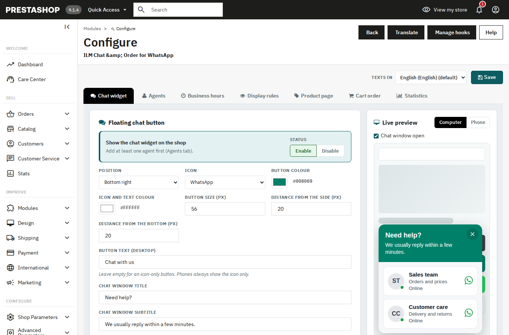
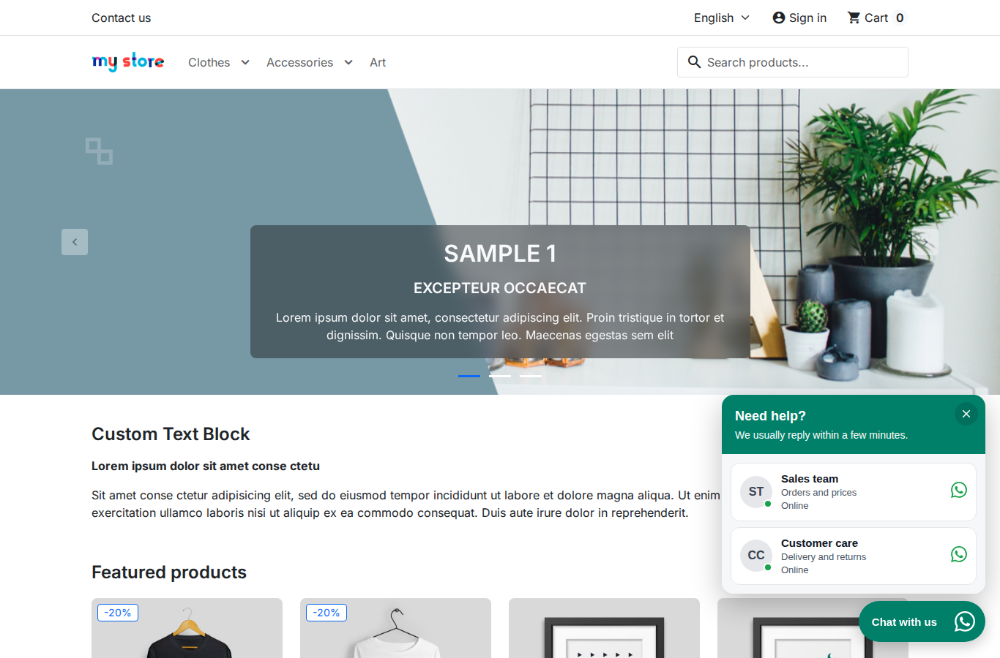
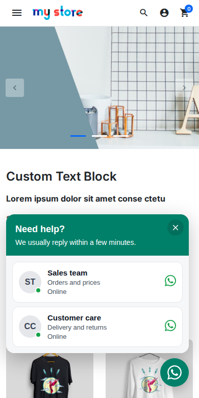

Chat widget
2.1 Turn the widget on
Open the Chat widget tab.
- Show the chat widget on the shop: turns the floating chat button on or off. Add at least one agent first, in the Agents tab.

2.2 Button look and position
- Position: Bottom right or Bottom left.
- Icon: WhatsApp, Chat bubble or Headset.
- Button colour: the colour of the round button.
- Icon and text colour: the colour of the icon and the text.
- Button size (px): from 40 to 80.
- Distance from side (px): from 0 to 200.
- Distance from bottom (px): from 0 to 200.
- Button text (desktop): up to 60 characters. Leave it empty for an icon only. Phones always show the icon only.
- Chat window title: up to 80 characters.
- Chat window subtitle: up to 160 characters.

2.3 Greeting bubble
- Show a greeting above the button: shows a small message once per visit. The shopper can close it.
- Greeting: up to 200 characters.
- Show after (seconds): from 0 to 120.
- After scrolling (%, 0 = off): from 0 to 100.
2.4 Agents
Open the Agents tab. Each agent is one WhatsApp number in the chat window. You can add up to 50 agents.
- Click Add an agent.
- Fill in Name, Role and WhatsApp number.
- Add a Photo address if you want a photo. It must start with https://.
- Write a Pre-filled message if you want one.
- Click Save.
Drag the handle to change the order. Use the arrows to move an agent up or down. Click Remove to delete an agent.
- Own working hours (otherwise the business hours): gives this agent their own hours. Leave a day empty when the agent is off.
You can use these variables in messages: {page_url} {product_title} {product_url} {price} {shop_name}.
2.5 Business hours
Open the Business hours tab.
- Use business hours: agents show as Online inside these hours. Agents with their own hours use those.
- Open: tick the days you are open.
- From and To: the opening times.
- Second period: a second time range for the same day.
- When nobody is online: show the widget with a "we reply soon" note, or hide the widget.
- Offline note: up to 200 characters.
2.6 Display rules
Open the Display rules tab to choose where the widget shows.
- Pages: all page types are ticked by default. Untick the pages where the widget must not show.
- Devices: Computers and phones, Computers only, or Phones only.
- Only these products (product pages): empty means every product.
- Only these categories (category and product pages): empty means every category.
- Also show on addresses containing (one per line): extra addresses where the widget shows.
- Never show on addresses containing (one per line): addresses where the widget never shows.
